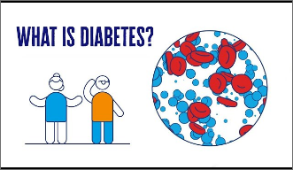

Diabetes mellitus refers to a group of diseases that affect how your body uses blood sugar (glucose). Glucose is vital to your health because it's an important source of energy for the cells that make up your muscles and tissues. It's also your brain's main source of fuel.
The underlying cause of diabetes varies by type. But, no matter what type of diabetes you have, it can lead to excess sugar in your blood. Too much sugar in your blood can lead to serious health problems.
Chronic diabetes conditions include type 1 diabetes and type 2 diabetes. Potentially reversible diabetes conditions include prediabetes and gestational diabetes. Prediabetes occurs when your blood sugar levels are higher than normal, but not high enough to be classified as diabetes. And prediabetes is often the precursor of diabetes unless appropriate measures are taken to prevent progression. Gestational diabetes occurs during pregnancy but may resolve after the baby is delivered.
